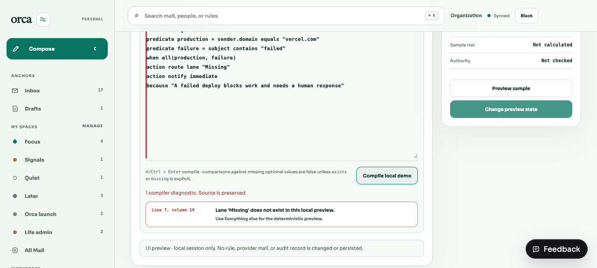
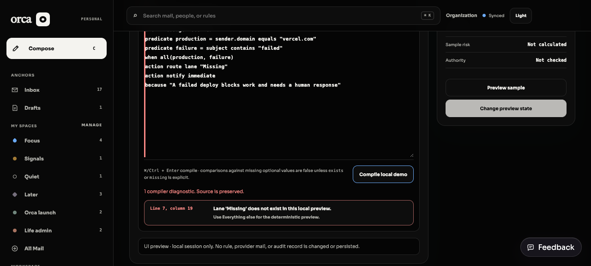
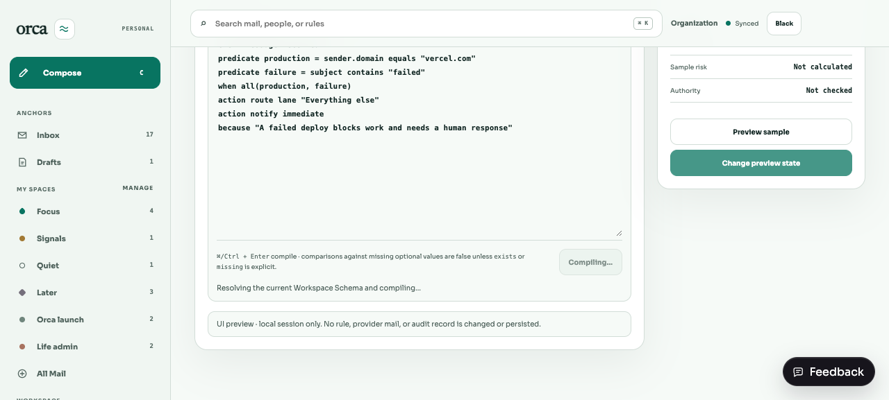
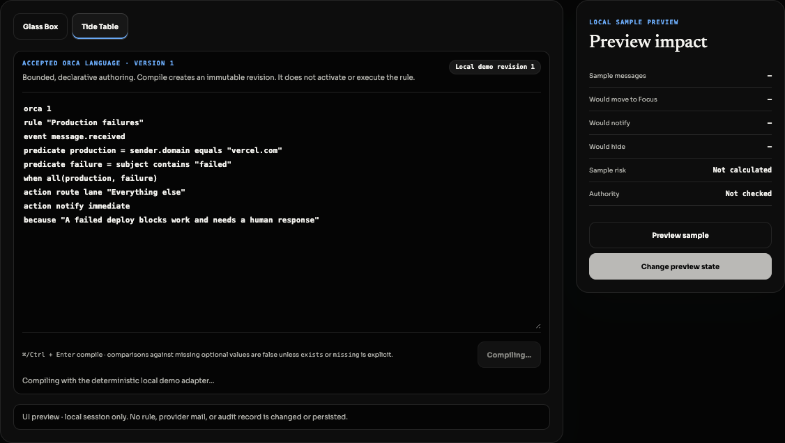

64 KiB source, 1,000 lines, 8,000 tokens, 1,000 AST nodes, depth 16, and 100 predicates/actions. Named-predicate depth is memoized over the dependency graph, so repeated fan-out is linear in declared syntax and edges.
Outcome
One narrow, reviewable compile path
Accepted Orca v1 sourceLocated, bounded text
→ParseExactly one Event
→Resolve + typeWorkspace revision → stable IDs
→ClassifyCapabilities + risk
→Append revisionSQLite immutable evidence
Optional comparisons encode false-on-missing. exists and missing are explicit; Facet values and operators are checked against authoritative enum membership, text length, numeric bounds/integer rules, Boolean, and datetime constraints.
Lane, Workflow, Facet, enum option, Collection, Context Type, and Context names compile to stable IDs at one Workspace revision.
Named predicates are pure, parameterless, revision-owned, and rejected with located diagnostics when recursive or too deep.
Edits append numbered revisions. Sequential idempotency-key and Rule-identity conflicts found by service preflight fail before append. Racing idempotency, Rule-revision/identity, and Workspace-revision checks are revalidated and the successful change is reserved inside the shared Organization transaction. Exact retries return the original persisted result.
No loops, network, filesystem, shell, JavaScript, Python, provider deletion, activation, or evaluator semantics were added.
Accepted authoring
Tide Table preserves source and points to the fault

Light · located resolve diagnosticSource remains editable; line and column select the relevant range.

Orca Black · selected, hover, diagnosticLabels remain readable against pure black and graphite.

Light · compiling/disabledGeometry and label are preserved while the request is in flight.

Orca Black · compiling/disabledMuted treatment remains legible and names the operation.
Manual check
Reviewer path
bun install --frozen-lockfile bun run typecheck bun run test bun run build bun run lint bun run dev open http://localhost:5173/dev/inbox?destination=organization 1. Choose Tide Table. 2. Edit a Lane name in source to an unknown value. 3. Compile immutable revision (or press Cmd/Ctrl + Enter). 4. Confirm the source stays intact and the located diagnostic is clickable. 5. Restore a current Lane name and compile. 6. Confirm revision number, capabilities, risk, and “Not activated” status. 7. Repeat default, hover, focus, selected, and disabled checks in Light and Orca Black.
Coverage map
Acceptance evidence
| Concern | Evidence |
|---|---|
| Malformed, locations, limits | compiler.test.ts: multi-phase diagnostics, exact line/column, source/depth/cycle cases, and a fan-out-10 dependency graph completing under a 250 ms assertion. |
| Resolution, types, optional semantics | Stable-ID Facet and enum assertions; authoritative enum/text/Boolean/number/datetime constraints; false-on-missing and required-missing cases; rename/rebind stability. |
| Persistence + immutability | migration.test.ts and service.test.ts: append-only editing, exact replay, sequential preflight conflicts, transactional race revalidation/reservation, rollback, transaction-bound one-shot authority, and direct UPDATE/DELETE rejection. |
| API + authorization | routes.test.ts: 401, 201 create/replay, stable 409 conflict, 422 diagnostics, authenticated Capability/Workspace scope, revision listing, cross-Workspace 404, and unchanged failure counts. |
| Tide Table | tide-table.test.tsx verifies the idempotency-bearing compile request and located diagnostics; the Light/Orca Black evidence above remains visually applicable because no control styling changed. |
Scope gate
This revision compiler produces declarative typed evidence only. Activation, simulation, evaluation, conflict resolution, and general-purpose execution remain outside BRE-314.